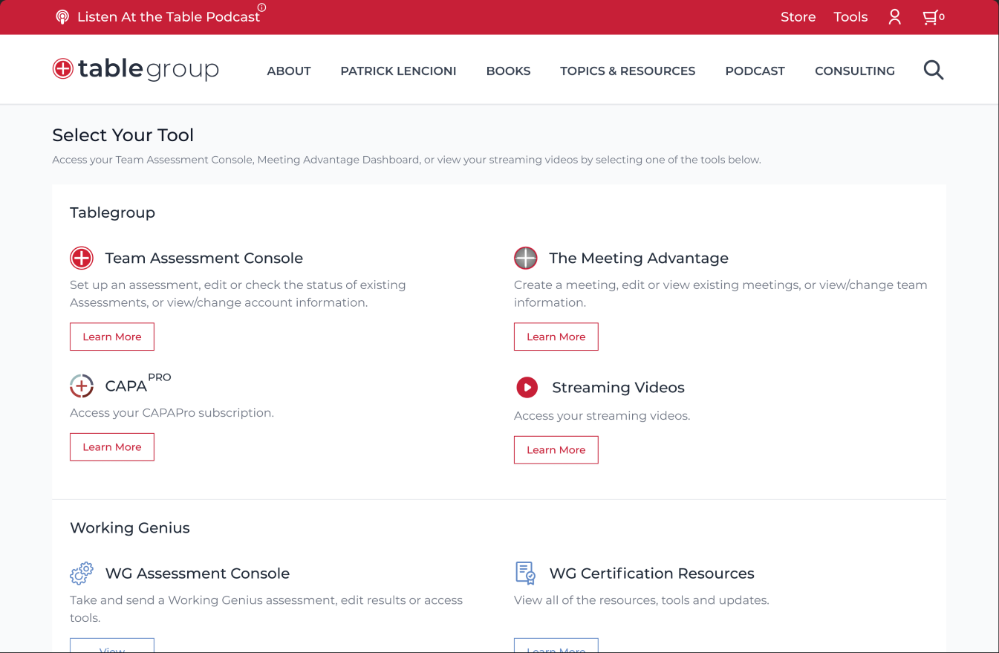
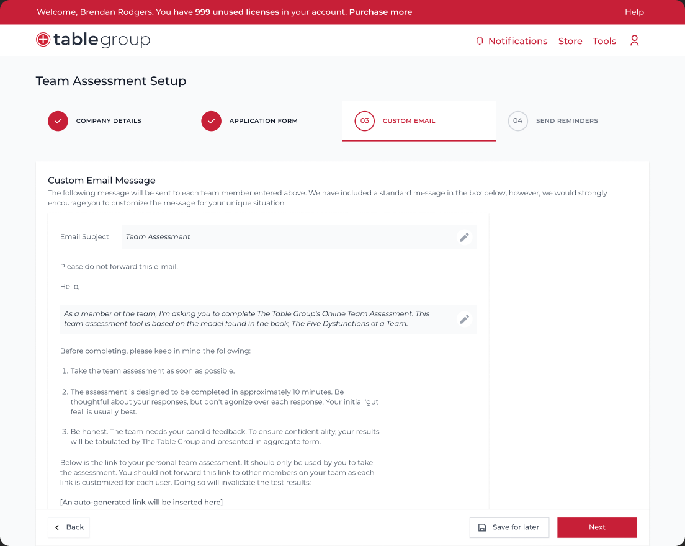
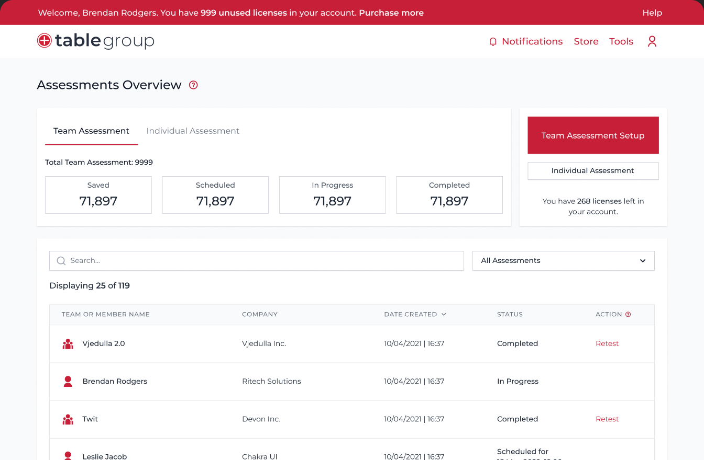
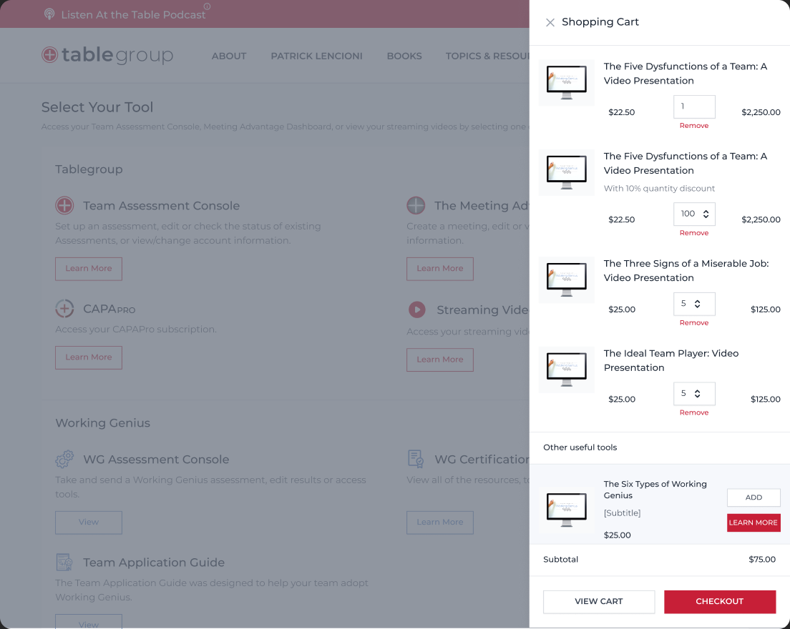
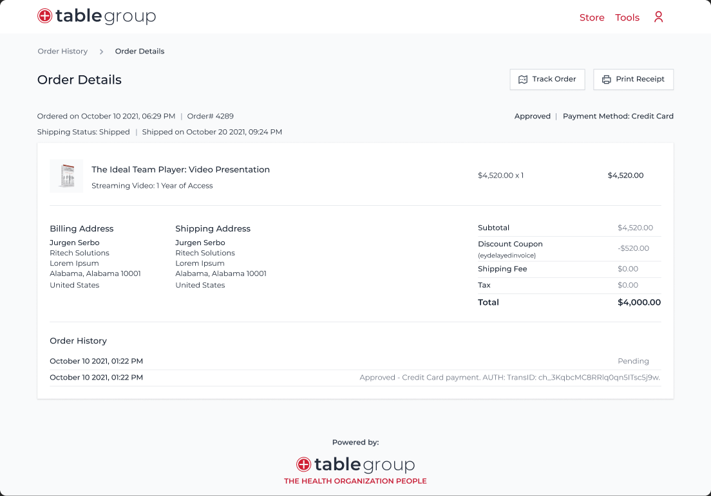

The Tablegroup
UI/UX Designer, solo designer on the team
A management consulting company focused on organizational health and executive team development. Through consulting, training and resources it helps teams improve teamwork, leadership and performance — rooted in Patrick Lencioni’s model from The Advantage.

Deliverables
Summary
Team Assessment Console
A tool offered by The Table Group that lets teams and organizations assess their overall health, cohesion and functionality — based on Patrick Lencioni’s work in The Five Dysfunctions of a Team.
Over two years as the solo designer on the team, I redesigned and transformed the user experience of the app. Here are some of my favorite improvements.
Our working structure
By switching to a design-thinking model and two-week sprints — with rapid prototyping and testing in the second week — we greatly increased the speed of testing new ideas and iterating on them.
Design system
Building on their existing brand identity, a new design system brought consistency across devices and let us scale designs confidently and grow new components.
Team assessment setup
I replaced a long list-style form with a clear, step-by-step setup process, plus a tooltip system that guides new users.


Assessment overview
Through research-driven design decisions, the platform was significantly improved by merging four incoherent flows for the same action. They were so different that users thought they had landed in another application. The result was a cohesive, user-centered design that improved the in-app experience for Tablegroup’s personas.

Better checkout
I led the complete redesign of checkout: adding items to the cart, updating billing and shipping, applying promo codes and completing purchases. In the old system even removing an item or updating billing details was frustrating, yet many users had grown used to it.
Through user interviews and iterating on prototypes, we delivered a streamlined, user-friendly checkout that improved usability while keeping it familiar for returning customers.


